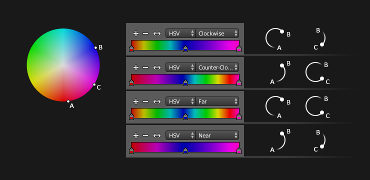

Віджет колірного градієнта¶
Color ramp.
Color Ramps enables the user to specify a range of colors based on color stops. Color stops are similar to a mark indicating where exactly the chosen color should be. The interval from each of the stops, added to the ramp, is a result of the color interpolation and chosen interpolation method.
Controls¶
- Додання -- Add
+ - Клацок ЛКМ на цій кнопці додає стоп у вашу власну карту малювальних вагомостей. Ці стопи додаються від останнього виділеного стопа до наступного, зліва направо і вони поміщаються посередині між цими стопами.
- Видалення -- Delete
- - Deletes the selected color stop from the list.
- Переверт -- Flip
<-> - Flips the gradient, inverting the values of the custom weight paint range.
- Режим Кольору -- Color Mode
Вибір використовуваного Колірного простору -- color space для інтерполяції.
- RGB
- Змішує кольори, мікшуючи кожен колірний канал та комбінуючи їх.
- HSV/HSL
- Змішує кольору, спершу конвертувавши їх у HSV або HSL, далі мікшуючи їх, і потім комбінуючи їх знову. Це дає перевагу для підтримання насиченості між різними відтінками, коли, інакше, RGB дає зненасичення, і це дозволяє мати багатший градієнт.
- Опції Інтерполяції -- Interpolation Options
Дозволяє користувачу вибирати типи обчислення інтерполяції між кольорами для кожного колірного стопа.
- RGB
- Б-Сплайн -- B-Spline
- Використовує тип інтерполяції Б-Сплайн -- B-Spline для колірних стопів.
- Кардинально -- Cardinal
- Використовує тип інтерполяції «Кардинально» -- Cardinal для колірних стопів.
- Лінеарно -- Linear
- Використовує тип інтерполяції «Лінеарно», прямолінійно -- Linear для колірних стопів.
- Легко -- Ease
- Uses an Ease Interpolation for the color stops.
- Постійно -- Constant
- Використовує тип інтерполяції «Постійно» -- Constant для колірних стопів.
- HSV and HSL
- Clockwise
- Clockwise interpolation around the HSV/HSL wheel.
- Counter-Clockwise
- Counterclockwise around the HSV/HSL wheel.
- Near
- Nearest route around the wheel.
- Far
- Furthest route around the wheel.
HSV and HSL interpolation options.
- Активний колірний стоп
- Index of the active color stop (shown as a dashed line). Allows you to change the active color when colors may be too close to easily select with the cursor.
- Позиція -- Position
- Це повзунок керує позиціюванням виділеного колірного стопа на діапазоні.
- Color
- Відкриває відбірник кольору -- color picker для можливості визначення користувачем кольору та Альфа для виділеного колірного стопа. Коли колір використовує Альфа, кнопка кольору ділиться на дві, де ліва її частина показує базовий колір, а права -- показує колір разом зі значенням альфа-прозорості.
{kind=link}
Скорочення¶
- LMB (перетяг) переміщується по кольорам.
- Ctrl-LMB (клацок) додає нову керувальну точку.